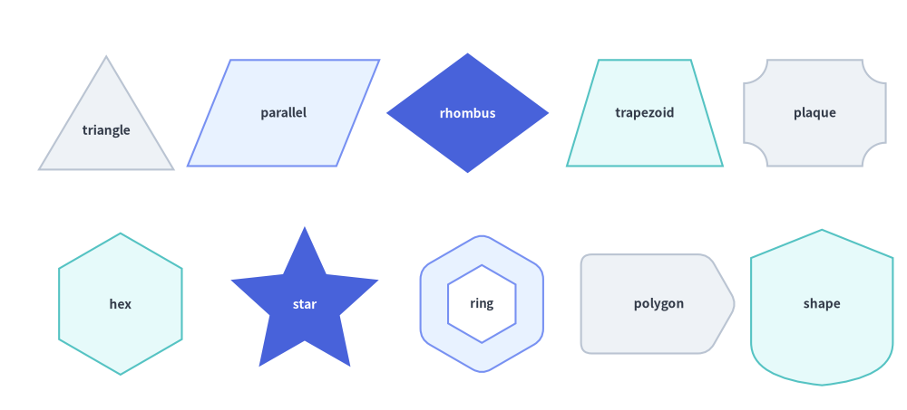
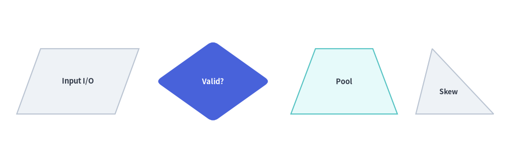
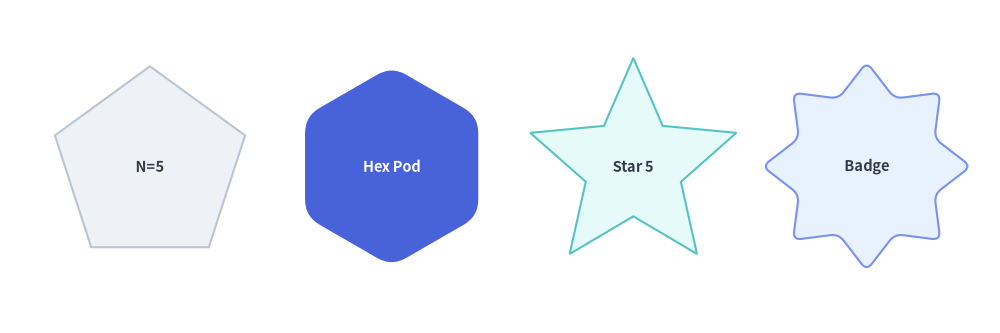
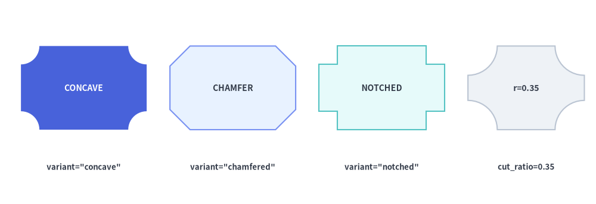
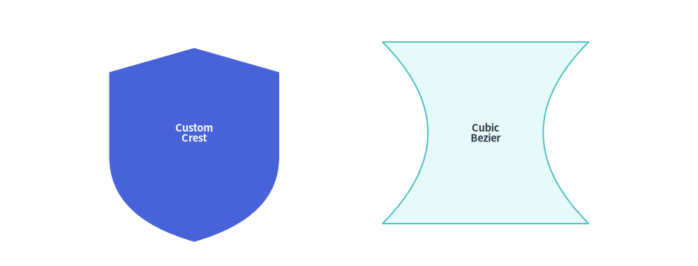

多角形とカスタムパス
drawlib.shapes の**多角形とカスタムパス（Polygons & Custom Paths）**カテゴリは、9 種類の幾何図形・パスプリミティブを提供します。具体的には、平面の三角形および四角形（triangle, parallelogram, trapezoid, rhombus）、回転対称な多角形（regularpolygon, star）、四隅を切り欠いた装飾フレーム（plaque）、任意座標による多角形（polygon）、そして低レベルのベジェ曲線ベクターパスビルダ（shape）が含まれます。

Source Code
from drawlib.canvas import save, setup
from drawlib.shapes import (
parallelogram,
plaque,
polygon,
regularpolygon,
rhombus,
shape,
star,
trapezoid,
triangle,
)
from drawlib.styles import Styles
setup(width=128, height=58)
lbl_dark = Styles.DarkBold.patch(text_size=10.0)
lbl_white = Styles.WhiteBold.patch(text_size=10.0)
# Row 1: Planar Triangle, Parallelogram, Rhombus, Trapezoid, Plaque
triangle(
(15, 42),
width=19,
height=16,
style=Styles.Neutral,
text="triangle",
text_style=lbl_dark.patch(xy_shift=(0, -2.5)),
)
parallelogram(
(40, 42),
width=21,
height=15,
corner_angle=68,
style=Styles.PrimaryNeutral,
text="parallel",
text_style=lbl_dark,
)
rhombus(
(66, 42),
width=23,
height=17,
style=Styles.PrimaryFlat,
text="rhombus",
text_style=lbl_white,
)
trapezoid(
(91, 42),
height=15,
bottomedge_width=22,
topedge_width=13,
style=Styles.SecondaryNeutral,
text="trapezoid",
text_style=lbl_dark,
)
plaque(
(115, 42),
width=20,
height=15,
variant="concave",
style=Styles.Neutral,
text="plaque",
text_style=lbl_dark,
)
# Row 2: Regular Polygon, Star, Hollow Hexagon, Arbitrary Polygon, Custom Bézier Shape
regularpolygon(
(17, 15),
num_vertex=6,
radius=10.0,
style=Styles.SecondaryNeutral,
text="hex",
text_style=lbl_dark,
)
star(
(43, 15),
num_vertex=5,
radius_ext=11.0,
radius_int=5.2,
style=Styles.PrimaryFlat,
text="star",
text_style=lbl_white,
)
regularpolygon(
(68, 15),
num_vertex=6,
radius=10.0,
hole_ratio=0.55,
style=Styles.PrimaryNeutral.patch(shape_r=1.5),
text="ring",
text_style=Styles.DarkBold.patch(text_size=9.5),
)
polygon(
[(82, 8), (100, 8), (104, 15), (100, 22), (82, 22)],
style=Styles.Neutral.patch(shape_r=1.5),
text="polygon",
text_style=lbl_dark,
)
shape(
(116, 15),
path_points=[(0, 6), (0, 18), (10, 22), (20, 18), (20, 6), ((20, 1), (10, 0)), ((0, 1), (0, 6))],
style=Styles.SecondaryNeutral,
text="shape",
text_style=lbl_dark,
)
save()
1. 基本となるジオメトリ概念
ほぼすべての多角形プリミティブは、Drawlib のデカルト座標空間と中心基準配置の規約（xy、ただし polygon は明示的なキャンバス座標リスト xys を指定）を共有しつつ、手動の三角関数計算なしで平面・放射状の輪郭を自在に変形できる簡潔なジオメトリパラメータを備えています。頂点オフセット（topvertex_x）、せん断角（corner_angle）、上下辺の個別幅（topedge_width / bottomedge_width）、同心の中抜き（hole_ratio）、頂点数（num_vertex）、星形の内外半径（radius_ext / radius_int）、プラークのコーナー形状（variant）、およびベジェ制御点（path_points）によって各プリミティブがどのように変化するかを以下のアニメーションで確認できます。

Source Code
from __future__ import annotations
import math
from drawlib.anim import Animation
from drawlib.canvas import save, setup
from drawlib.icons import code as code_icons
from drawlib.icons import phosphor
from drawlib.lines import line
from drawlib.shapes import (
arc,
circle,
parallelogram,
plaque,
rectangle,
regularpolygon,
rhombus,
shape,
star,
trapezoid,
triangle,
)
from drawlib.smartarts import SourceCode, SourceCodeStyles
from drawlib.styles import Styles
from drawlib.text import text
W, H = 138.0, 82.0
setup(width=W, height=H)
anim = Animation(fps=10.0, loop=0)
CODE_TEXT_SIZE = 10.0
PT_TO_CANVAS = W / 720.0
FONT_CANVAS = CODE_TEXT_SIZE * PT_TO_CANVAS
LINE_H = FONT_CANVAS * 1.8
PAD_Y = FONT_CANVAS * 1.2
CODE_STYLES = SourceCodeStyles.get("default", font_lang="en", text_size=CODE_TEXT_SIZE).patch(
box_style=Styles.Neutral.patch(shape_fill_color=(0, 0, 0, 0), shape_line_width=0),
)
PANE_HEADER = Styles.Neutral.patch(
shape_fill_color=(238, 243, 250),
shape_line_color=(203, 213, 225),
shape_line_width=1.2,
shape_r=0.0,
)
EDITOR_BODY = Styles.Neutral.patch(
shape_fill_color=(250, 252, 255),
shape_line_color=(203, 213, 225),
shape_line_width=1.2,
shape_r=0.0,
)
TAKEAWAY_BODY = Styles.Neutral.patch(
shape_fill_color=(242, 246, 253),
shape_line_color=(203, 213, 225),
shape_line_width=1.2,
shape_r=0.0,
)
STUDIO_BODY = Styles.Neutral.patch(
shape_fill_color=(239, 243, 249),
shape_line_color=(203, 213, 225),
shape_line_width=1.2,
shape_r=0.0,
)
PART_ITEMS = [
("1. triangle & skew", "topvertex_x & angle"),
("2. trap & rhombus", "edge widths & hole"),
("3. regular & star", "vertices & radii"),
("4. plaque & shape", "variants & Bézier"),
]
def draw_step_bar(active_part: int) -> None:
"""Draw top 4-part progress bar (active_part is 1..4)."""
pill_w = 31.0
pill_h = 7.4
gap = 2.0
start_x = 4.0 + pill_w / 2.0
cy = 75.2
for idx, (label, sublabel) in enumerate(PART_ITEMS, start=1):
cx = start_x + (idx - 1) * (pill_w + gap)
if idx > 1:
prev_cx = cx - (pill_w + gap)
line(
(prev_cx + pill_w / 2.0 + 0.2, cy),
(cx - pill_w / 2.0 - 0.2, cy),
style=Styles.PrimaryBold if idx <= active_part else Styles.MutedThin,
)
if idx == active_part:
st = Styles.PrimaryFlat.patch(shape_r=1.4)
tst = Styles.WhiteBold.patch(text_size=10.3)
sub_tst = Styles.White.patch(text_size=9.5)
elif idx < active_part:
st = Styles.PrimaryNeutral.patch(shape_r=1.4, shape_line_width=1.1)
tst = Styles.PrimaryBold.patch(text_size=10.3)
sub_tst = Styles.Primary.patch(text_size=9.5)
else:
st = Styles.Neutral.patch(shape_r=1.4, shape_line_width=1.1)
tst = Styles.MutedBold.patch(text_size=10.3)
sub_tst = Styles.Muted.patch(text_size=9.5)
rectangle((cx, cy), width=pill_w, height=pill_h, style=st)
text((cx, cy + 1.35), label, style=tst)
text((cx, cy - 1.55), sublabel, style=sub_tst)
def draw_left_pane(
active_part: int,
code_lines: list[str],
hl_range: tuple[int, int],
icon_fn: object,
summary_title: str,
summary_line1: str,
summary_line2: str,
) -> None:
"""Draw left Python code editor + bottom geometric concept note."""
x0, w = 4.0, 63.5
cx = x0 + w / 2.0
top_y = 63.2
header_h = 5.4
editor_h = 43.8
takeaway_h = 15.8
rectangle((cx, top_y + header_h / 2.0), width=w, height=header_h, style=PANE_HEADER)
code_icons.python((x0 + 3.6, top_y + header_h / 2.0), width=3.4, style=Styles.Neutral)
text(
(x0 + 6.5, top_y + header_h / 2.0),
"polygons.py",
style=Styles.DarkBold.patch(text_size=10.2, halign="left"),
)
text(
(x0 + w - 2.6, top_y + header_h / 2.0),
f"Part {active_part} / 4",
style=Styles.PrimaryBold.patch(text_size=9.8, halign="right"),
)
rectangle((cx, top_y - editor_h / 2.0), width=w, height=editor_h, style=EDITOR_BODY)
hl_start, hl_end = hl_range
hl_top = top_y - PAD_Y - hl_start * LINE_H
hl_bot = top_y - PAD_Y - (hl_end + 1) * LINE_H
hl_cy = (hl_top + hl_bot) / 2.0
hl_h = hl_top - hl_bot
rectangle(
(cx, hl_cy),
width=w - 0.6,
height=hl_h,
style=Styles.Neutral.patch(shape_fill_color=(229, 239, 255), shape_line_width=0),
)
rectangle(
(x0 + 0.55, hl_cy),
width=0.9,
height=hl_h,
style=Styles.PrimaryFlat.patch(shape_line_width=0),
)
SourceCode.draw(
xy=(x0, top_y),
width=w,
code="\n".join(code_lines),
styles=CODE_STYLES,
code_lang="python",
show_linenum=True,
align="top_left",
)
take_cy = 3.6 + takeaway_h / 2.0
rectangle((cx, take_cy), width=w, height=takeaway_h, style=TAKEAWAY_BODY)
circle(
(x0 + 6.4, take_cy),
radius=3.3,
style=Styles.PrimaryNeutral.patch(shape_line_width=1.2),
)
icon_fn((x0 + 6.4, take_cy), width=3.8, style=Styles.PrimaryBold) # type: ignore[operator]
text(
(x0 + 11.4, take_cy + 3.6),
summary_title,
style=Styles.DarkBold.patch(text_size=10.4, halign="left"),
)
text(
(x0 + 11.4, take_cy - 0.2),
summary_line1,
style=Styles.Dark.patch(text_size=9.7, halign="left"),
)
text(
(x0 + 11.4, take_cy - 3.8),
summary_line2,
style=Styles.PrimaryBold.patch(text_size=9.6, halign="left"),
)
def draw_geometry_studio(param_badge: str, footer_caption: str) -> tuple[float, float]:
"""Draw right geometry lab shell, inner coordinate sheet with subtle grid, and footer."""
x0, w = 70.0, 64.0
cx = x0 + w / 2.0
top_y = 63.2
header_h = 5.4
body_h = 59.6
rectangle((cx, top_y + header_h / 2.0), width=w, height=header_h, style=PANE_HEADER)
phosphor.ruler((x0 + 3.6, top_y + header_h / 2.0), width=3.4, style=Styles.Primary)
text(
(x0 + 6.5, top_y + header_h / 2.0),
"Live Geometry & Guides",
style=Styles.DarkBold.patch(text_size=10.2, halign="left"),
)
text(
(x0 + w - 2.6, top_y + header_h / 2.0),
param_badge,
style=Styles.PrimaryBold.patch(text_size=9.6, halign="right"),
)
rectangle((cx, 3.6 + body_h / 2.0), width=w, height=body_h, style=STUDIO_BODY)
# Inner coordinate sheet (54 x 40) with subtle grid lines visible through holes
sheet_cx, sheet_cy = cx, 36.2
sheet_w, sheet_h = 54.0, 40.0
sx0, sy0 = sheet_cx - sheet_w / 2.0, sheet_cy - sheet_h / 2.0
rectangle(
(sheet_cx, sheet_cy),
width=sheet_w,
height=sheet_h,
style=Styles.Neutral.patch(
shape_fill_color=(255, 255, 255),
shape_line_color=(180, 194, 214),
shape_line_width=1.2,
),
)
g_st = Styles.MutedThin.patch(line_color=(232, 238, 246), line_width=0.8)
for gx in range(1, 6):
vx = sx0 + gx * (sheet_w / 6.0)
line((vx, sy0), (vx, sy0 + sheet_h), style=g_st)
for gy in range(1, 5):
vy = sy0 + gy * (sheet_h / 5.0)
line((sx0, vy), (sx0 + sheet_w, vy), style=g_st)
rectangle(
(cx, 8.4),
width=59.2,
height=5.2,
style=Styles.Neutral.patch(
shape_fill_color=(255, 255, 255),
shape_line_color=(203, 213, 225),
shape_line_width=1.1,
shape_r=2.4,
),
text=footer_caption,
text_style=Styles.DarkBold.patch(text_size=9.8),
)
return sheet_cx, sheet_cy
# =========================================================================
# Part 1: triangle (topvertex_x) & parallelogram (corner_angle)
# =========================================================================
TRI_STATES: list[tuple[str, float | None, float, str, str, str, str]] = [
(
"None",
None,
3.2,
"Isosceles Triangle (topvertex_x=None)",
"topvertex_x offsets apex from bottom-left corner",
"None defaults to width / 2 = 15 (symmetric)",
"topvertex_x=None • Defaults to width / 2 (Symmetric)",
),
(
"0",
0.0,
3.2,
"Right Triangle (topvertex_x=0)",
"topvertex_x=0 aligns apex over bottom-left edge",
"topvertex_x=width aligns over bottom-right edge",
"topvertex_x=0 • Left-Aligned 90° Right Triangle",
),
(
"24",
24.0,
3.2,
"Skewed Triangle (topvertex_x=24)",
"Any float shifts the top apex horizontally",
"Base width=30 stays centered around xy",
"topvertex_x=24 • Apex Shifted +24 from Left Edge",
),
]
for tx_expr, tx_num, dur, s_title, s_l1, s_l2, f_cap in TRI_STATES:
code_tri = [
"from drawlib.shapes import triangle",
"from drawlib.styles import Styles",
"",
"# Offset of top apex from bottom-left edge",
"triangle(",
" (50, 30), width=30, height=21,",
f" topvertex_x={tx_expr},",
" style=Styles.PrimaryNeutral,",
")",
]
with anim.frame(duration=dur):
draw_step_bar(1)
draw_left_pane(1, code_tri, (5, 6), phosphor.triangle, s_title, s_l1, s_l2)
scx, scy = draw_geometry_studio(f"topvertex_x = {tx_expr}", f_cap)
cy_t = scy - 0.6
x_bl, x_br = scx - 15.0, scx + 15.0
y_bot, y_top = cy_t - 10.5, cy_t + 10.5
tx_val = 15.0 if tx_num is None else tx_num
x_apex = x_bl + tx_val
rectangle(
(scx, cy_t),
width=30.0,
height=21.0,
style=Styles.MutedDashed.patch(
shape_fill_color=(0, 0, 0, 0),
shape_line_color=(185, 198, 218),
shape_line_width=1.0,
),
)
triangle(
(scx, cy_t),
width=30.0,
height=21.0,
topvertex_x=tx_num,
style=Styles.PrimaryNeutral.patch(shape_line_width=1.8),
)
circle((scx, cy_t), radius=1.2, style=Styles.DangerFlat)
text((scx, cy_t - 4.0), "xy", style=Styles.DangerBold.patch(text_size=9.5))
if tx_num == 0.0:
sq = 2.8
line((x_bl + sq, y_bot), (x_bl + sq, y_bot + sq), style=Styles.DangerBold.patch(line_width=1.4))
line((x_bl, y_bot + sq), (x_bl + sq, y_bot + sq), style=Styles.DangerBold.patch(line_width=1.4))
text((x_bl + 6.2, y_bot + 2.5), "90°", style=Styles.DangerBold.patch(text_size=9.5))
circle((x_apex, y_top), radius=1.3, style=Styles.DangerFlat)
text(
(x_apex + 1.8, y_top + 4.2),
"topvertex_x = 0 (left edge)",
style=Styles.PrimaryBold.patch(text_size=9.6, halign="left"),
)
else:
circle((x_apex, y_top), radius=1.3, style=Styles.PrimaryFlat)
line(
(x_bl, y_top + 2.5),
(x_apex, y_top + 2.5),
arrow_head="<->",
style=Styles.PrimaryBold.patch(line_width=1.4),
)
top_lbl = "None → width / 2 (15)" if tx_num is None else "topvertex_x = 24"
text(
((x_bl + x_apex) / 2.0, y_top + 5.5),
top_lbl,
style=Styles.PrimaryBold.patch(text_size=9.6),
)
line(
(x_bl, y_bot - 2.6),
(x_br, y_bot - 2.6),
arrow_head="<->",
style=Styles.DarkBold.patch(line_width=1.4),
)
text((scx, y_bot - 5.5), "width = 30", style=Styles.DarkBold.patch(text_size=9.6))
for c_ang, dur in ((82, 0.50), (62, 3.2)):
code_para = [
"from drawlib.shapes import parallelogram",
"from drawlib.styles import Styles",
"",
"# Interior slant angle (0 < angle < 90)",
"parallelogram(",
" (50, 30), width=32, height=19,",
f" corner_angle={c_ang},",
" style=Styles.SecondaryNeutral,",
")",
]
with anim.frame(duration=dur):
draw_step_bar(1)
draw_left_pane(
1,
code_para,
(5, 6),
phosphor.compass,
"Shear Angle (parallelogram)",
"corner_angle sets bottom-left slant (0°..90°)",
"Smaller angle increases horizontal top shear",
)
w_p, h_p = 32.0, 19.0
x_shift = h_p / math.tan(math.radians(c_ang))
total_w = w_p + x_shift
scx, scy = draw_geometry_studio(
f"corner_angle = {c_ang}°",
f"corner_angle={c_ang}° • Base width=32, Shear={x_shift:.1f}",
)
cy_p = scy - 0.5
p1_x, p1_y = scx - total_w / 2.0, cy_p - h_p / 2.0
p2_x, p2_y = p1_x + x_shift, cy_p + h_p / 2.0
p4_x = p1_x + w_p
line((p1_x, p1_y), (p1_x, p2_y + 2.0), style=Styles.MutedDashed.patch(line_width=1.1))
parallelogram(
(scx, cy_p),
width=w_p,
height=h_p,
corner_angle=c_ang,
style=Styles.SecondaryNeutral.patch(shape_line_width=1.8),
)
arc(
(p1_x, p1_y),
width=11.0,
height=11.0,
angle_start=0,
angle_end=c_ang,
style=Styles.PrimaryNeutral.patch(shape_line_width=2.0),
)
text(
(p1_x + 7.2, p1_y + 3.2),
f"{c_ang}°",
style=Styles.PrimaryBold.patch(text_size=9.8, halign="left"),
)
if c_ang == 62:
line(
(p1_x, p2_y + 2.4),
(p2_x, p2_y + 2.4),
arrow_head="<->",
style=Styles.PrimaryBold.patch(line_width=1.4),
)
text(
((p1_x + p2_x) / 2.0 + 3.0, p2_y + 5.3),
f"shear = {x_shift:.1f}",
style=Styles.PrimaryBold.patch(text_size=9.5),
)
line(
(p1_x, p1_y - 2.6),
(p4_x, p1_y - 2.6),
arrow_head="<->",
style=Styles.DarkBold.patch(line_width=1.4),
)
text(((p1_x + p4_x) / 2.0, p1_y - 5.5), "width = 32", style=Styles.DarkBold.patch(text_size=9.6))
circle((scx, cy_p), radius=1.2, style=Styles.DangerFlat)
# =========================================================================
# Part 2: trapezoid (topedge_width) & rhombus (shape_r + hole_ratio)
# =========================================================================
for top_w, dur in ((28, 0.45), (18, 0.45), (11, 3.2)):
code_trap = [
"from drawlib.shapes import trapezoid",
"from drawlib.styles import Styles",
"",
"trapezoid(",
" (50, 30), height=19,",
" bottomedge_width=30,",
f" topedge_width={top_w},",
" style=Styles.PrimaryNeutral,",
")",
]
with anim.frame(duration=dur):
draw_step_bar(2)
draw_left_pane(
2,
code_trap,
(5, 6),
phosphor.bounding_box,
"Dual Edge Widths (trapezoid)",
"Independent topedge_width & bottomedge_width",
"topedge_x=None centers the top edge cleanly",
)
scx, scy = draw_geometry_studio(
f"topedge = {top_w}",
f"topedge_width={top_w} vs. bottomedge_width=30",
)
cy_tr = scy - 0.4
y_bot, y_top = cy_tr - 9.5, cy_tr + 9.5
line((scx - 15.0, y_bot), (scx - 15.0, y_top), style=Styles.MutedDashed.patch(line_width=1.0))
line((scx + 15.0, y_bot), (scx + 15.0, y_top), style=Styles.MutedDashed.patch(line_width=1.0))
trapezoid(
(scx, cy_tr),
height=19.0,
bottomedge_width=30.0,
topedge_width=float(top_w),
style=Styles.PrimaryNeutral.patch(shape_line_width=1.8),
)
line(
(scx - top_w / 2.0, y_top + 2.6),
(scx + top_w / 2.0, y_top + 2.6),
arrow_head="<->",
style=Styles.PrimaryBold.patch(line_width=1.5),
)
text(
(scx, y_top + 5.6),
f"topedge_width = {top_w}",
style=Styles.PrimaryBold.patch(text_size=9.8),
)
line(
(scx - 15.0, y_bot - 2.6),
(scx + 15.0, y_bot - 2.6),
arrow_head="<->",
style=Styles.DarkBold.patch(line_width=1.4),
)
text(
(scx, y_bot - 5.6),
"bottomedge_width = 30",
style=Styles.DarkBold.patch(text_size=9.6),
)
circle((scx, cy_tr), radius=1.2, style=Styles.DangerFlat)
for hr_expr, hr_val, dur in (("None", None, 0.50), ("0.52", 0.52, 3.2)):
code_rhom = [
"from drawlib.shapes import rhombus",
"from drawlib.styles import Styles",
"",
"rhombus(",
" (50, 30), width=32, height=21,",
f" hole_ratio={hr_expr},",
" style=Styles.PrimaryFlat.patch(",
" shape_r=2.2,",
" ),",
")",
]
with anim.frame(duration=dur):
draw_step_bar(2)
draw_left_pane(
2,
code_rhom,
(5, 7),
phosphor.diamond,
"Rounded Hollow Diamond (rhombus)",
"width & height set full tip-to-tip diagonals",
"hole_ratio=0.52 + shape_r=2.2 inset cleanly",
)
badge = "Solid Rhombus" if hr_val is None else "hole_ratio = 0.52"
f_rhom = (
"rhombus(shape_r=2.2, hole_ratio=None) • Solid Diamond"
if hr_val is None
else "rhombus(shape_r=2.2, hole_ratio=0.52) • True Cutout"
)
scx, scy = draw_geometry_studio(badge, f_rhom)
cy_rh = scy + 0.2
rhombus(
(scx, cy_rh),
width=32.0,
height=21.0,
hole_ratio=hr_val,
style=Styles.PrimaryFlat.patch(shape_r=2.2),
)
line(
(scx - 16.0, cy_rh - 13.0),
(scx + 16.0, cy_rh - 13.0),
arrow_head="<->",
style=Styles.DarkBold.patch(line_width=1.4),
)
text(
(scx, cy_rh - 15.8),
"width = 32 (diagonal)",
style=Styles.DarkBold.patch(text_size=9.5),
)
if hr_val is not None:
line(
(scx - 6.8, cy_rh),
(scx + 6.8, cy_rh),
arrow_head="<->",
style=Styles.DangerBold.patch(line_width=1.5),
)
text(
(scx, cy_rh + 13.5),
"hole_ratio = 0.52 • Grid Visible Inside",
style=Styles.PrimaryBold.patch(text_size=9.6),
)
# =========================================================================
# Part 3: regularpolygon (num_vertex) & star (radius_ext / radius_int)
# =========================================================================
POLY_NAMES = {3: "Triangle", 5: "Pentagon", 6: "Hexagon", 8: "Octagon"}
for nv, dur in ((3, 0.45), (5, 0.45), (6, 0.45), (8, 3.2)):
code_reg = [
"from drawlib.shapes import regularpolygon",
"from drawlib.styles import Styles",
"",
"# First vertex always starts at 90° (top)",
"regularpolygon(",
" (50, 30),",
f" num_vertex={nv}, radius=13.5,",
" style=Styles.PrimaryNeutral,",
")",
]
with anim.frame(duration=dur):
draw_step_bar(3)
draw_left_pane(
3,
code_reg,
(6, 6),
phosphor.hexagon,
"Circumscribed Polygon (regularpolygon)",
"Places num_vertex corners on circle of radius",
"Top vertex sits at 90° (rotate via style.angle)",
)
p_name = POLY_NAMES[nv]
scx, scy = draw_geometry_studio(
f"num_vertex = {nv}",
f"num_vertex={nv} ({p_name}) • Circumscribed r=13.5",
)
cy_rp = scy - 1.0
r_rp = 13.5
circle(
(scx, cy_rp),
radius=r_rp,
style=Styles.MutedDashed.patch(
shape_fill_color=(0, 0, 0, 0),
shape_line_color=(175, 192, 216),
shape_line_width=1.2,
),
)
regularpolygon(
(scx, cy_rp),
num_vertex=nv,
radius=r_rp,
style=Styles.PrimaryNeutral.patch(shape_line_width=1.8),
)
for i in range(nv):
ang_rad = math.pi / 2.0 + i * 2.0 * math.pi / nv
vx = scx + r_rp * math.cos(ang_rad)
vy = cy_rp + r_rp * math.sin(ang_rad)
circle(
(vx, vy),
radius=1.35 if i == 0 else 1.0,
style=Styles.DangerFlat if i == 0 else Styles.PrimaryFlat,
)
text((scx, cy_rp + r_rp + 3.4), "90° (top)", style=Styles.DangerBold.patch(text_size=9.6))
circle((scx, cy_rp), radius=1.1, style=Styles.DarkFlat)
rad_a = math.radians(45.0 if nv == 8 else 30.0)
line(
(scx, cy_rp),
(scx + r_rp * math.cos(rad_a), cy_rp + r_rp * math.sin(rad_a)),
arrow_head="->",
style=Styles.DarkBold.patch(line_width=1.4),
)
text(
(scx + 14.5, cy_rp + 8.0),
"r = 13.5",
style=Styles.DarkBold.patch(text_size=9.5, halign="left"),
)
for r_int, dur in ((8.0, 0.45), (5.4, 0.45), (3.6, 3.2)):
code_star = [
"from drawlib.shapes import star",
"from drawlib.styles import Styles",
"",
"# 2 * num_vertex alternating tip/valley pts",
"star(",
" (50, 30), num_vertex=5,",
" radius_ext=13.5,",
f" radius_int={r_int:.1f},",
" style=Styles.PrimaryFlat,",
")",
]
with anim.frame(duration=dur):
draw_step_bar(3)
draw_left_pane(
3,
code_star,
(6, 7),
phosphor.star,
"Outer Tips & Inner Valleys (star)",
"radius_ext sets outer tips; radius_int valleys",
"Smaller radius_int sharpens star points live",
)
scx, scy = draw_geometry_studio(
f"radius_int = {r_int:.1f}",
f"num_vertex=5, radius_ext=13.5, radius_int={r_int:.1f}",
)
cy_st = scy - 0.8
r_ext = 13.5
circle(
(scx, cy_st),
radius=r_ext,
style=Styles.PrimaryDashed.patch(shape_fill_color=(0, 0, 0, 0), shape_line_width=1.2),
)
star(
(scx, cy_st),
num_vertex=5,
radius_ext=r_ext,
radius_int=r_int,
style=Styles.PrimaryFlat,
)
circle(
(scx, cy_st),
radius=r_int,
style=Styles.DangerDashed.patch(shape_fill_color=(0, 0, 0, 0), shape_line_width=1.4),
)
circle((scx, cy_st), radius=1.1, style=Styles.White)
tip_rad = math.radians(18.0)
line(
(scx, cy_st),
(scx + r_ext * math.cos(tip_rad), cy_st + r_ext * math.sin(tip_rad)),
arrow_head="->",
style=Styles.DarkBold.patch(line_width=1.4),
)
text(
(scx + 14.0, cy_st + 7.2),
"r_ext=13.5",
style=Styles.PrimaryBold.patch(text_size=9.5, halign="left"),
)
val_rad = math.radians(-18.0)
line(
(scx, cy_st),
(scx + r_int * math.cos(val_rad), cy_st + r_int * math.sin(val_rad)),
arrow_head="->",
style=Styles.DangerBold.patch(line_width=1.5),
)
text(
(scx + 12.2, cy_st - 9.8),
f"r_int={r_int:.1f}",
style=Styles.DangerBold.patch(text_size=9.6, halign="left"),
)
# =========================================================================
# Part 4: plaque (variant) & shape (Bézier path_points)
# =========================================================================
PLAQUE_STATES = [
("concave", 3.2, "Quarter-Circle Arc Cut", 'variant="concave" • Inward Quarter-Circle Arcs'),
("chamfered", 0.45, "45° Diagonal Corner Cut", 'variant="chamfered" • 45° Diagonal Octagonal Cuts'),
("notched", 3.2, "90° L-Shaped Step Cut", 'variant="notched" • 90° Orthogonal Stepped Corners'),
]
for var_name, dur, corner_desc, f_cap in PLAQUE_STATES:
code_plaque = [
"from drawlib.shapes import plaque",
"from drawlib.styles import Styles",
"",
'# "concave" | "chamfered" | "notched"',
"plaque(",
" (50, 30), width=36, height=22,",
f' variant="{var_name}",',
" cut_ratio=0.25,",
" style=Styles.SecondaryNeutral,",
")",
]
with anim.frame(duration=dur):
draw_step_bar(4)
draw_left_pane(
4,
code_plaque,
(6, 7),
phosphor.certificate,
f'Plaque Corner Cut (variant="{var_name}")',
"Carves all 4 corners by cut_ratio * min(w, h)",
'"chamfered" (45°) & "notched" (90°) take shape_r',
)
scx, scy = draw_geometry_studio(f'"{var_name}"', f_cap)
cy_pl = scy - 0.4
rectangle(
(scx, cy_pl),
width=36.0,
height=22.0,
style=Styles.MutedDashed.patch(
shape_fill_color=(0, 0, 0, 0),
shape_line_color=(185, 198, 218),
shape_line_width=1.0,
),
)
plaque(
(scx, cy_pl),
width=36.0,
height=22.0,
variant=var_name, # type: ignore[arg-type]
cut_ratio=0.25,
style=Styles.SecondaryNeutral.patch(shape_line_width=1.8),
text=var_name.upper(),
text_style=Styles.DarkBold.patch(text_size=10.5),
)
text(
(scx, cy_pl + 14.3),
corner_desc,
style=Styles.PrimaryBold.patch(text_size=9.8),
)
text(
(scx, cy_pl - 14.2),
"cut_ratio = 0.25 • Dashed = Full 36 × 22 Box",
style=Styles.MutedBold.patch(text_size=9.5),
)
with anim.frame(duration=3.2):
code_shape = [
"from drawlib.shapes import shape",
"from drawlib.styles import Styles",
"",
"shape(",
" (50, 30), path_points=[",
" (0, 0), (0, 11),",
" ((9, 24), (25, 24), (34, 11)),",
" (34, 0),",
" ],",
" style=Styles.PrimaryNeutral,",
")",
]
draw_step_bar(4)
draw_left_pane(
4,
code_shape,
(5, 8),
phosphor.bezier_curve,
"Custom Vector & Bézier Path (shape)",
"(x, y) straight; ((cp1), (cp2), (end)) cubic",
"Auto-closes back to path_points[0] & centers xy",
)
scx, scy = draw_geometry_studio(
"Cubic Bézier",
"Straight (x, y) Edges + Cubic ((cp1), (cp2), (end))",
)
cy_sh = scy - 1.2
# Local bbox of anchor_points [(0,0), (0,11), (9,24), (34,0)] has center (17.0, 12.0)
ox, oy = scx - 17.0, cy_sh - 12.0
shape(
(scx, cy_sh),
path_points=[
(0, 0),
(0, 11),
((9, 24), (25, 24), (34, 11)),
(34, 0),
],
style=Styles.PrimaryNeutral.patch(shape_line_width=2.0),
text="Custom Path",
text_style=Styles.DarkBold.patch(text_size=10.2, xy_shift=(0, -3.2)),
)
# Control point tangent handle guides
p_s = (ox + 0.0, oy + 11.0)
p_cp1 = (ox + 9.0, oy + 24.0)
p_cp2 = (ox + 25.0, oy + 24.0)
p_e = (ox + 34.0, oy + 11.0)
line(p_s, p_cp1, style=Styles.DangerDashed.patch(line_width=1.4))
line(p_e, p_cp2, style=Styles.DangerDashed.patch(line_width=1.4))
line(p_cp1, p_cp2, style=Styles.MutedDashed.patch(line_width=1.0))
for vx, vy in ((0, 0), (0, 11), (34, 11), (34, 0)):
circle((ox + vx, oy + vy), radius=1.15, style=Styles.PrimaryFlat)
circle(p_cp1, radius=1.35, style=Styles.DangerFlat)
circle(p_cp2, radius=1.35, style=Styles.DangerFlat)
text((p_cp1[0] - 1.5, p_cp1[1] + 3.1), "cp1 (9,24)", style=Styles.DangerBold.patch(text_size=9.5))
text((p_cp2[0] + 1.5, p_cp2[1] + 3.1), "cp2 (25,24)", style=Styles.DangerBold.patch(text_size=9.5))
text((scx, oy - 3.6), "Straight (x, y) Segments", style=Styles.PrimaryBold.patch(text_size=9.6))
save()
- 頂点オフセットと傾斜角 (
topvertex_x,corner_angle):topvertex_xはtriangleの上頂点を左下隅から水平方向にオフセットし（Noneでwidth / 2の二等辺三角形、0で90°の直角三角形）、corner_angle（0°..90°）はparallelogramの内角の傾きを設定します。 - 上下辺の個別幅指定と中抜きカットアウト (
topedge_width,hole_ratio,shape_r):trapezoidはtopedge_widthとbottomedge_widthを独立して指定でき、平面多角形および正多角形ではhole_ratioによる透明カットアウトとstyle.shape_rによる頂点フィレットを併用できます。 - 回転対称と星形の谷 (
num_vertex,radius,radius_ext,radius_int):regularpolygonは上端90°から外接円radius上にnum_vertex個の頂点を等間隔で配置し、starは2 * num_vertex個の外側先端（radius_ext）と内側の谷（radius_int）を交互に配置します。 - 装飾プラークとカスタムベジェパス (
variant,path_points):plaqueは四隅を"concave"、"chamfered"（45°）、または"notched"（90°）で切り欠き、shapeは直線セグメント(x, y)と 2 次ベジェ((cp), (end))・3 次ベジェ((cp1), (cp2), (end))曲線を自在に組み合わせます。
2. 多角形・パスプリミティブの比較早見表
全 9 種類のプリミティブにおける基準座標（アンカー）、頂点数、中抜き対応、角丸対応、および代表的な図解用途を以下の表にまとめます。
| 関数 | 基準座標 | 頂点数 | hole_ratio |
style.shape_r |
主な図解用途 |
|---|---|---|---|---|---|
triangle |
中心 (cx, cy) |
3 | 対応 (0, 1) |
float または 3 要素タプル (bl, top, br) |
警告バッジ、デルタ記号、ピラミッド、直角・斜め三角形。 |
parallelogram |
中心 (cx, cy) |
4 | 対応 (0, 1) |
float または 4 要素タプル (bl, tl, tr, br) |
フローチャートのデータ入出力（I/O）ブロック、メッセージストリーム、傾斜レイヤー。 |
trapezoid |
中心 (cx, cy) |
4 | 対応 (0, 1) |
float または 4 要素タプル (bl, tl, tr, br) |
マルチプレクサ、ニューラルネットのプーリング層、ステージ縮小ブロック。 |
rhombus |
中心 (cx, cy) |
4 | 対応 (0, 1) |
float または 4 要素タプル (left, top, right, bottom) |
フローチャートの条件分岐ゲート、ER 図のリレーションひし形、ルーター。 |
regularpolygon |
中心 (cx, cy) |
num_vertex >= 3 |
対応 (0, 1) |
float または N 要素タプル |
六角形マイクロサービスポッド（N=6）、八角形（N=8）、五角形（N=5）。 |
star |
中心 (cx, cy) |
2 * num_vertex |
— | float または (2N) 要素タプル |
評価スター（N=5）、認定・表彰バッジ（N=8, 12）、注目マーカー。 |
plaque |
中心 (cx, cy) |
8 / 12 / 曲線 | — | float またはタプル（chamfered/notched） |
証明書フレーム、SLA バッジ、フォーマルラベル、チケットカード。 |
polygon |
明示的な xys |
len(xys) >= 3 |
— | float または N 要素タプル |
カスタムネットワークゾーン、不規則な領域、特注の多頂点カード。 |
shape |
中心 (cx, cy) |
任意 | — | — | 直線・2 次ベジェ・3 次ベジェ曲線を組み合わせたカスタムシルエット。 |
3. 平面四角形と三角形 (triangle, parallelogram, trapezoid, rhombus)
4 種類の平面多角形関数はすべて、中心基準のバウンディングボックス規約を共有し、角丸フィレット（style.shape_r）、中抜きカットアウト（hole_ratio）、および回転（style.angle）をサポートしています。
triangle(
xy: tuple[float, float],
width: float,
height: float,
topvertex_x: float | None = None,
*,
hole_ratio: float | None = None,
style: Style,
text: str = "",
text_style: Style | None = None,
) -> None
parallelogram(
xy: tuple[float, float],
width: float,
height: float,
corner_angle: float = 60.0,
*,
hole_ratio: float | None = None,
style: Style,
text: str = "",
text_style: Style | None = None,
) -> None
trapezoid(
xy: tuple[float, float],
height: float,
bottomedge_width: float,
topedge_width: float,
topedge_x: float | None = None,
*,
hole_ratio: float | None = None,
style: Style,
text: str = "",
text_style: Style | None = None,
) -> None
rhombus(
xy: tuple[float, float],
width: float,
height: float,
*,
hole_ratio: float | None = None,
style: Style,
text: str = "",
text_style: Style | None = None,
) -> None
パラメータリファレンス
| 関数 | パラメータ | 型 | デフォルト | 説明 |
|---|---|---|---|---|
| 共通 | xy |
tuple[float, float] |
必須 | 回転前のバウンディングボックスの中心座標 (x, y)（プリセットの Styles.* 使用時）。 |
hole_ratio |
float | None |
None |
(0.0, 1.0) の範囲で指定する同心の中抜き比率（任意）。 |
|
style |
Style |
必須 | 塗りつぶし、枠線、回転角（angle）、および頂点の角丸（shape_r: スカラー float または頂点別タプル）。 |
|
text / text_style |
str / Style | None |
"" / None |
中央配置されるテキストラベルおよび任意のタイポグラフィ上書きスタイル（非対称な三角形や台形でラベル位置を調整するには xy_shift を使用）。 |
|
triangle |
width / height |
float |
必須 | 底辺の幅（> 0）および垂直高さ（> 0）。 |
topvertex_x |
float | None |
None |
左下隅を基準とした上頂点の水平オフセット（None はデフォルトの width / 2 で二等辺三角形、0 は左寄せの直角三角形、width は右寄せの直角三角形になります）。 |
|
parallelogram |
width / height |
float |
必須 | 底辺の幅（> 0）および垂直高さ（> 0）。注: 全体の水平バウンディング幅は width + height / tan(corner_angle) になります。 |
corner_angle |
float |
60.0 |
左下内角の傾斜角度（度数法、0 < corner_angle < 90）。 |
|
trapezoid |
height |
float |
必須 | 垂直高さ（> 0）。注: trapezoid では width の代わりに bottomedge_width と topedge_width を指定します。 |
bottomedge_width |
float |
必須 | 下底（水平辺）の長さ（> 0）。 |
|
topedge_width |
float |
必須 | 上底（水平辺）の長さ（> 0）。逆台形（ファネル形状）にするには topedge_width > bottomedge_width に設定します。 |
|
topedge_x |
float | None |
None |
左下頂点を基準とした左上頂点の水平オフセット（None の場合、上底が左右対称になる (bottomedge_width - topedge_width) / 2 に自動配置されます）。 |
|
rhombus |
width / height |
float |
必須 | 水平方向の対角線長および垂直方向の対角線長（> 0）。 |
from drawlib.canvas import save, setup
from drawlib.shapes import parallelogram, rhombus, trapezoid, triangle
from drawlib.styles import Styles
setup(width=124, height=40)
lbl_dark = Styles.DarkBold.patch(text_size=10.5)
# 1. Parallelogram (I/O Stream)
parallelogram(
(19, 20),
width=24,
height=16,
corner_angle=70,
style=Styles.Neutral,
text="Input I/O",
text_style=lbl_dark,
)
# 2. Rhombus (Decision Gate with rounded vertices)
rhombus(
(52, 20),
width=28,
height=20,
style=Styles.PrimaryFlat.patch(shape_r=1.5),
text="Valid?",
text_style=Styles.WhiteBold.patch(text_size=10.5),
)
# 3. Symmetric Trapezoid (Pooling / Funnel Layer)
trapezoid(
(84, 20),
height=16,
bottomedge_width=26,
topedge_width=14,
style=Styles.SecondaryNeutral,
text="Pool",
text_style=lbl_dark,
)
# 4. Asymmetric Triangle (topvertex_x shifts apex horizontally)
triangle(
(111, 20),
width=19,
height=16,
topvertex_x=4,
style=Styles.Neutral,
text="Skew",
text_style=Styles.DarkBold.patch(text_size=10.0, xy_shift=(-1.5, -2.5)),
)
save()

平面多角形における中抜きカットアウト (hole_ratio) と頂点別角丸 (shape_r)
4 種類の平面多角形はすべて、(0.0, 1.0) の範囲で hole_ratio を指定して相似形状の内側穴をくり抜くことができ、さらに style.patch(shape_r=...) にスカラー float または頂点ごとのタプルを指定して角丸化できます。
from drawlib.canvas import save, setup
from drawlib.shapes import parallelogram, rhombus, trapezoid, triangle
from drawlib.styles import Styles
from drawlib.text import text
setup(width=128, height=44)
lbl = Styles.DarkBold.patch(text_size=9.5)
# 1. Hollow rounded triangle (warning frame)
triangle(
(18, 25),
width=22,
height=19,
hole_ratio=0.52,
style=Styles.WarningFlat.patch(shape_r=1.8),
)
text((18, 8), "triangle(hole=0.52)", style=lbl)
# 2. Hollow rounded rhombus
rhombus(
(49, 25),
width=26,
height=20,
hole_ratio=0.55,
style=Styles.PrimaryFlat.patch(shape_r=1.5),
)
text((49, 8), "rhombus(hole=0.55)", style=lbl)
# 3. Hollow parallelogram
parallelogram(
(81, 25),
width=21,
height=17,
corner_angle=68,
hole_ratio=0.55,
style=Styles.PrimaryNeutral.patch(shape_r=1.5),
)
text((81, 8), "parallelogram(hole=0.55)", style=lbl)
# 4. Trapezoid with top corners rounded only: shape_r=(0, 3.5, 3.5, 0)
trapezoid(
(112, 25),
height=17,
bottomedge_width=24,
topedge_width=15,
style=Styles.SecondaryNeutral.patch(shape_r=(0, 3.5, 3.5, 0)),
text="Top r=3.5",
text_style=lbl,
)
text((112, 8), "shape_r=(0,3.5,3.5,0)", style=lbl)
save()

4. 正多角形と星形 (regularpolygon, star)
regularpolygon と star は、xy を中心とする回転対称な図形を構築します。第 1 頂点は上端（90°、または style.angle で回転した位置）に配置されます。
regularpolygon(
xy: tuple[float, float],
num_vertex: int,
radius: float,
*,
hole_ratio: float | None = None,
style: Style,
text: str = "",
text_style: Style | None = None,
) -> None
star(
xy: tuple[float, float],
num_vertex: int,
radius_ext: float,
radius_int: float,
*,
style: Style,
text: str = "",
text_style: Style | None = None,
) -> None
| 関数 | パラメータ | 型 | デフォルト | 説明 |
|---|---|---|---|---|
regularpolygon |
xy |
tuple[float, float] |
必須 | 外接円の中心座標 (cx, cy)。 |
num_vertex |
int |
必須 | 正多角形の頂点数・辺数（>= 3。例: 五角形は 5、六角形は 6、八角形は 8）。 |
|
radius |
float |
必須 | 中心 xy から各頂点までの外接円半径（> 0）。 |
|
hole_ratio |
float | None |
None |
(0.0, 1.0) の範囲で指定する同心正多角形の中抜き比率（任意）。 |
|
style |
Style |
必須 | angle による回転、および shape_r による頂点の角丸（スカラー float または num_vertex 要素タプル）をサポートします。 |
|
star |
xy |
tuple[float, float] |
必須 | 星形の中心座標 (cx, cy)。 |
num_vertex |
int |
必須 | 外側の突起（先端）の数（>= 3）。多角形としての総頂点数は 2 * num_vertex になります。 |
|
radius_ext |
float |
必須 | 外側先端までの半径（> radius_int）。 |
|
radius_int |
float |
必須 | 内側の谷（くぼみ）までの半径（0 < radius_int < radius_ext）。 |
|
style |
Style |
必須 | angle による回転、および shape_r による角丸（スカラー float、または (outer_tip, inner_valley) が交互に並ぶ (2 * num_vertex) 要素タプル）をサポートします。 |
from drawlib.canvas import save, setup
from drawlib.shapes import regularpolygon, star
from drawlib.styles import Styles
setup(width=120, height=40)
lbl_dark = Styles.DarkBold.patch(text_size=10.5)
# 1. Pentagon (num_vertex=5)
regularpolygon(
(18, 20),
num_vertex=5,
radius=12,
style=Styles.Neutral,
text="N=5",
text_style=lbl_dark,
)
# 2. Rounded Hexagon Pod (num_vertex=6, shape_r=2)
regularpolygon(
(47, 20),
num_vertex=6,
radius=12,
style=Styles.PrimaryFlat.patch(shape_r=2),
text="Hex Pod",
text_style=Styles.WhiteBold.patch(text_size=10.5),
)
# 3. 5-Point Star (radius_ext=13, radius_int=6.0)
star(
(76, 20),
num_vertex=5,
radius_ext=13,
radius_int=6.0,
style=Styles.SecondaryNeutral,
text="Star 5",
text_style=lbl_dark,
)
# 4. Rounded 8-Point Badge Star (num_vertex=8, shape_r=1.0)
star(
(104, 20),
num_vertex=8,
radius_ext=12.5,
radius_int=8.8,
style=Styles.PrimaryNeutral.patch(shape_r=1.0),
text="Badge",
text_style=lbl_dark,
)
save()

5. 装飾・認定プラーク (plaque)
plaque は四隅に装飾的なカットアウトを施した矩形フレームを描画します。SLA・コンプライアンス認定バッジ、証明書ヘッダー、チケット半券、フォーマルなアーキテクチャラベルなどに最適です。
plaque(
xy: tuple[float, float],
width: float,
height: float,
*,
variant: Literal[
"concave", "standard",
"chamfered", "octagon",
"notched",
] = "concave",
cut_ratio: float | None = None,
style: Style,
text: str = "",
text_style: Style | None = None,
) -> None
パラメータおよび variant リファレンス
| パラメータ | 型 | デフォルト | 説明 |
|---|---|---|---|
xy |
tuple[float, float] |
必須 | プラークのバウンディングボックスの中心座標 (x, y)（style.halign / style.valign に対応）。 |
width / height |
float |
必須 | 外側の水平幅（> 0）および垂直高さ（> 0）。 |
variant |
PlaqueVariant |
"concave" |
四隅のカット形状（下の プラーク variant 比較表を参照）。 |
cut_ratio |
float | None |
None |
min(width, height) に対する四隅の切り欠きサイズ比率（[0.02, 0.45]）。None の場合はデフォルトの 0.20 になります。 |
style |
Style |
必須 | 塗りつぶし、枠線、回転角（angle）、および頂点フィレット（"chamfered" および "notched" バリアントでは shape_r をサポート）。 |
text / text_style |
str / Style | None |
"" / None |
中央配置されるテキストラベルおよび任意のタイポグラフィ上書きスタイル。 |
variant |
利用可能な別名 | 四隅の形状 | style.shape_r 対応 |
主な用途 |
|---|---|---|---|---|
"concave" (デフォルト) |
"standard" |
四隅を内側に滑らかな四分円アークでくり抜いた形状 | —（円弧形状） | クラシックな装飾プラーク、チケット、認定バッジ。 |
"chamfered" |
"octagon" |
四隅を直線的に 45° で面取りした形状（8 頂点の八角形カード） |
対応（float または 8 要素タプル） |
インダストリアル/ハードウェアラベル、ゲートカード、面取りフレーム。 |
"notched" |
— | 四隅を直交する 90° L 字ステップで内側に切り欠いた形状（12 頂点の段付きカード） |
対応（float または 12 要素タプル） |
レトロ/ピクセル調フレーム、バスカード、アーキテクチャ銘板ブロック。 |
from drawlib.canvas import save, setup
from drawlib.shapes import plaque
from drawlib.styles import Styles
from drawlib.text import text
setup(width=128, height=44)
lbl = Styles.DarkBold.patch(text_size=9.5)
# 1. Concave (inward circular arc corners)
plaque(
(18, 25),
width=27,
height=18,
variant="concave",
cut_ratio=0.22,
style=Styles.PrimaryFlat,
text="CONCAVE",
text_style=Styles.WhiteBold.patch(text_size=10.0),
)
text((18, 8), 'variant="concave"', style=lbl)
# 2. Chamfered / Octagon (45° diagonal cut corners)
plaque(
(50, 25),
width=27,
height=18,
variant="chamfered",
cut_ratio=0.24,
style=Styles.PrimaryNeutral,
text="CHAMFER",
text_style=Styles.DarkBold.patch(text_size=10.0),
)
text((50, 8), 'variant="chamfered"', style=lbl)
# 3. Notched (90° inward step corners)
plaque(
(82, 25),
width=27,
height=18,
variant="notched",
cut_ratio=0.22,
style=Styles.SecondaryNeutral,
text="NOTCHED",
text_style=Styles.DarkBold.patch(text_size=10.0),
)
text((82, 8), 'variant="notched"', style=lbl)
# 4. Deep concave cut (cut_ratio=0.35)
plaque(
(113, 25),
width=25,
height=18,
variant="concave",
cut_ratio=0.35,
style=Styles.Neutral,
text="r=0.35",
text_style=Styles.DarkBold.patch(text_size=10.0),
)
text((113, 8), "cut_ratio=0.35", style=lbl)
save()

6. 任意座標の多角形 (polygon)
polygon は、キャンバス上の明示的な頂点座標シーケンス xys=[(x1, y1), (x2, y2), ...] から閉じた多角形を直接構築します。オプションで内側の中抜き穴 holes も指定できます。
polygon(
xys: list[tuple[float, float]],
*,
holes: list[list[tuple[float, float]]] | None = None,
style: Style,
text: str = "",
text_style: Style | None = None,
) -> None
| パラメータ | 型 | デフォルト | 説明 |
|---|---|---|---|
xys |
list[tuple[float, float]] |
必須 | 3 点以上の外周頂点のキャンバス座標リスト [(x1, y1), (x2, y2), ...]。 |
holes |
list[list[tuple[float, float]]] | None |
None |
内側の中抜きリング座標リスト [[(hx1, hy1), ...], ...]（任意）。頂点の巻き方向は自動的に正規化されます（外周 xys は反時計回り、中抜き holes は時計回り）。 |
style.shape_r |
float | tuple[float, ...] | None |
None |
スカラー float を渡すと外周および穴のすべての頂点を均等に丸めます。len(xys) と同じ長さのタプル (r1, r2, ..., rN) を渡すと、外周の各頂点を個別に丸めます（0 は鋭角のまま維持）。 |
text / text_style |
str / Style | None |
"" / None |
xys のバウンディングボックス中心に自動配置される埋め込みラベル。 |
from drawlib.canvas import save, setup
from drawlib.shapes import polygon
from drawlib.styles import Styles
from drawlib.text import text
setup(width=128, height=44)
lbl = Styles.DarkBold.patch(text_size=9.5)
# 1. Irregular network zone with uniform corner rounding
polygon(
xys=[(6, 12), (10, 36), (38, 38), (44, 14), (22, 8)],
style=Styles.Neutral.patch(shape_r=3),
text="Subnet A",
text_style=Styles.DarkBold.patch(text_size=10.5),
)
# 2. Custom tag card with per-vertex radii (sharp tip on right)
polygon(
xys=[(50, 12), (50, 36), (76, 36), (88, 24), (76, 12)],
style=Styles.PrimaryFlat.patch(shape_r=(3, 3, 2, 0, 2)),
text="Tag",
text_style=Styles.WhiteBold.patch(text_size=10.5),
)
# 3. Compound polygon frame with two interior cutout holes
polygon(
xys=[(94, 10), (124, 10), (124, 38), (94, 38)],
holes=[
[(98, 26), (108, 26), (108, 34), (98, 34)],
[(110, 14), (120, 14), (120, 22), (110, 22)],
],
style=Styles.PrimaryNeutral.patch(shape_r=1.5),
)
text((109, 5), "holes=[...]", style=lbl)
save()

7. 低レベルベクター・ベジェパスビルダ (shape)
直線、2 次ベジェ曲線、3 次ベジェ曲線を組み合わせたカスタムシルエットを、xy 基準の相対配置および回転サポート付きで描画したい場合は、shape() を使用します。
shape(
xy: tuple[float, float],
path_points: list[
tuple[float, float]
| tuple[tuple[float, float], tuple[float, float]]
| tuple[tuple[float, float], tuple[float, float], tuple[float, float]]
],
*,
style: Style,
text: str = "",
text_style: Style | None = None,
is_default_center: bool = False,
) -> None
パラメータ / path_points 要素 |
型 / タプル形式 | 説明 |
|---|---|---|
xy |
tuple[float, float] |
キャンバス上の基準座標 (x, y)（プリセットの Styles.* 使用時はバウンディングボックスの中心）。 |
先頭要素 path_points[0] |
(x0, y0) |
ローカル座標系における開始頂点 (x0, y0) の 2 要素タプルである必要があります（Path.MOVETO）。 |
| 直線セグメント | (x, y) |
(x, y) まで直線を描画します（Path.LINETO）。 |
| 2 次ベジェ曲線セグメント | ((cp_x, cp_y), (end_x, end_y)) |
単一の制御点 cp に向かって湾曲しながら終点 end へ至る曲線を描画します（Path.CURVE3）。 |
| 3 次ベジェ曲線セグメント | ((cp1_x, cp1_y), (cp2_x, cp2_y), (end_x, end_y)) |
2 つの制御点 cp1, cp2 を経由して終点 end へ至る滑らかな曲線を描画します（Path.CURVE4）。 |
is_default_center |
bool |
style.halign または style.valign が None の場合のフォールバック配置モードです。すべてのプリセット Styles.* は明示的に halign="center", valign="center" を持つため、パスのバウンディングボックス中心が xy に配置されます。 |
from drawlib.canvas import save, setup
from drawlib.shapes import shape
from drawlib.styles import Styles
setup(width=115, height=44)
# 1. Custom Crest Silhouette (Quadratic Bézier curved base)
shape(
xy=(32, 22),
path_points=[
(0, 14),
(0, 28),
(14, 32),
(28, 28),
(28, 14),
((28, 4), (14, 0)),
((0, 4), (0, 14)),
],
style=Styles.PrimaryFlat,
text="Custom\nCrest",
text_style=Styles.WhiteBold.patch(text_size=10.5),
)
# 2. Custom Symmetric Hourglass Silhouette (Cubic Bézier waist)
shape(
xy=(80, 22),
path_points=[
(0, 0),
((10, 10), (10, 20), (0, 30)),
(34, 30),
((24, 20), (24, 10), (34, 0)),
],
style=Styles.SecondaryNeutral,
text="Cubic\nBezier",
text_style=Styles.DarkBold.patch(text_size=10.5),
)
save()

[!TIP]
shape()でカスタムベジェパスをゼロから構築する前に、3D コンテナ・フロー・グルーピング（document,funnel,cloud,brace）、吹き出し・バッジ・ステータス（shield,ribbon,pin,tag,explosion）、および フェイス・時計・記号・演算子（gear,math_symbol,heart,lightning,moon）を確認してください。よく使われる複雑なシルエットがパラメータ化済みの標準関数として用意されています。